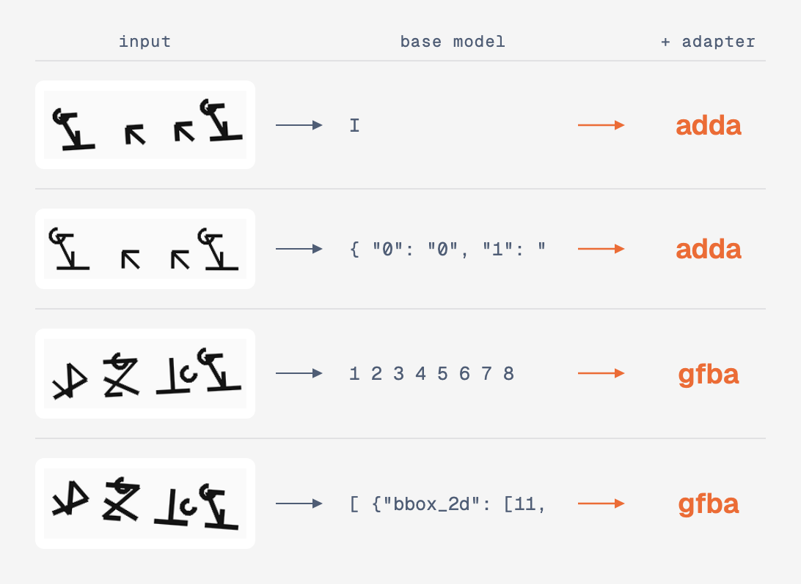

We trained a LoRA adapter on invented glyph-to-letter mappings in PyTorch, then ran it through a mutable-weight bind on a 0.8B multimodal Neural Engine deployment. The result was 213 of 240 character positions correct and 41 of 60 whole strings correct. A separate operator-form investigation showed why a clean bind alone is not evidence that the intended adapter computation is working.
Numbers, with the builds kept separate
| Measure | Result |
|---|---|
| 0.8B deployed glyph adapter; 60 images of 30 unseen combinations, two renders each | 213/240 characters (88.75%); 41/60 strings (68.33%) |
| Same deployed task instruction with the adapter off | 0/240 characters; 0/60 strings under the filed scorer |
| Warm adapter changes on the 0.8B demo build; small recorded timing series | about 52 ms; 12 recorded changes span 47.2–56.3 ms |
| Separate 1.7B, 8-bit-palettized text-model build: bound vs baked adapter, fp16 logits, six prompts | 0/9,723,904 values differ per prompt |
| Same text-build comparator, OFF vs LEGAL bound adapter | 99.97% of values differ |
The glyph checkpoint was chosen using a render holdout. The 30 evaluated combinations are absent from both its training and checkpoint-selection manifests. The base produced unrelated text, which the filed task scorer marked incorrect. The logged “PROMPT(off+hint)” arm supplied an empty hint and repeated the base condition; it is not an independent prompting baseline. These results do not show that an adapter beats an adequately prompted model.
Why check the computation after a successful bind?
Our archived matched-pair report describes one 0.8B model exported in two forms. It lists 282 linear and 18 convolution operations for one compiled graph, versus 186 linear and 114 convolution operations for the other. The changed surface corresponds to 48 adapter sites with two factors each. The convolution form also changes shape-handling operations, so this comparison concerns the complete tested export form, not the opcode alone.
In those recorded tests, both forms bound without an error, but the linear form did not exhibit the intended two-factor composition. That does not mean every adapter effect was zero: the null-factor controls also produced unintended effects. This is separate from the glyph demonstration; we have no located linear-form glyph-decode result. The compiled matched-pair artifacts are not in the current public packet, so the operation counts above are an archived report, not a newly reproduced census.
Limits
- The glyph adapter was trained on the host GPU. The host also prepares inputs and handles orchestration. This is deployed adapter inference, not on-chip training.
- The research bind/generation setup used SIP and AMFI disabled, a privately entitled harness and trusted-path staging. It is not a stock-Mac deployment recipe or an Apple-supported public adapter API.
- The experiments used one M5 Pro and macOS 27.0. The operator-form conclusion is limited to the tested traced/Core ML exports. We have not located a saved spec establishing the serialization label for the matched pair, so we do not call it a neuralnetwork-only result.
- We do not know which operator form Apple's own adapters use.
- The warm timing series is small. It excludes first-load cost and host re-prefill after a switch; it is not end-to-end request latency or an energy result. Requesting the already-active adapter avoids a bind call, not inference work.
- The separate bit-identity result establishes output fidelity on six tested prompts for that graph/toolchain. It does not prove universal equivalence or show that the runtime never copies weights in memory.
- These experiments establish neither general adapter superiority over prompting nor a speed advantage over other deployment paths.
What remains open
A working linear-form bind through another export path would establish an important boundary to this result; it would not erase the observed failure on the tested path. The current evidence does not support a universal claim that linear operators fail on the Neural Engine.
Code and evidence
- Codebook supplement: training and data-generation code, deployment helpers and saved result records. Availability of each required compiled artifact and harness is documented there.
- The deploy script packs a blob for an existing convolution-form graph. Setting an environment variable does not create a second linear-form compiled graph.
- The large matched-pair compiled builds and signed bind executable are not included in this notebook. The bit-identity values above are from the archived comparison record, not a new logit-dump recount in this review.